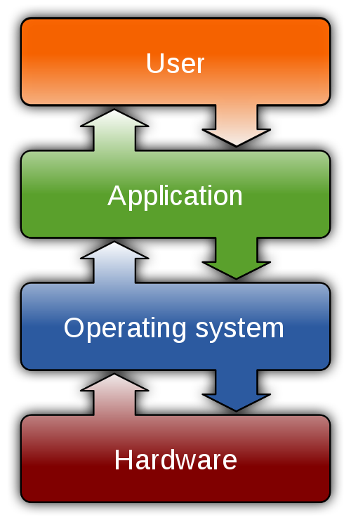

The operating system is the most crucial part of the system software. All other software needs an operating system in place that will:
Let the other software run
Manage the operations on the system, such as allowing software to read and write to secondary storage devices like hard disks
Otherwise, the functions that the operating system gives would need to be included in every piece of software running on the same system.
This would be extremely inefficient, and it would mean that computers would be inflexible and unable to run a variety of applications, as each piece
of software would need to be designed for the specific hardware it was meant to be run on.

Layers of software combine
to let computers do tasks.
Software instructs the system hardware to do tasks, and layers of software combine to allow the computer to do these tasks.
Normally, the operating system interacts with hardware, and provides a user interface and security.
Hardware
The operating system manages resources and ensures that the software and hardware can communicate with each other, which includes:
Processor scheduling — determining the order in which processes will be executed, which allows for multitasking
Handling interrupts — dealing with requests that disrupt the processor's work
Memory management — recording how memory in the computer is divided and identified so that memory is allocated efficiently between
processes that are running
Secondary storage management — tracking where files and programs are stored and which parts are available for storage, and managing
files and folders based on user permissions
Input/Output device management — ensuring efficient communication with devices and managing functionality issues
User Interface
The operating system provides the user interface, which is the means by which users of the computer interact with the computer and
receive the information that it processes.
Security
The operating system supports the security of a device by ensuring that resources are protected from unauthorised access through the
use of permissions and passwords.